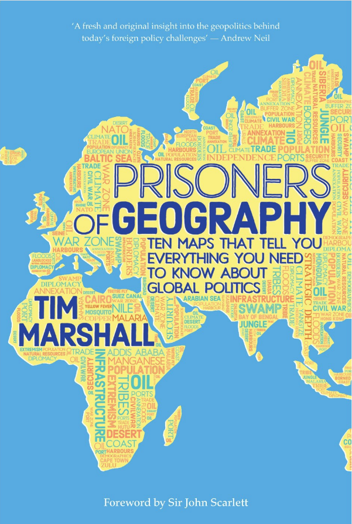

Educated
by Tara Westover
Mormonism, the end of the world, conspiracy theories and her father's bipolar disorder - things that were set to doom Tara Westover to a life of anguish in a forever volatile environment. Instead, they informed her decision to break the vicious circle of abuse and neglect, earn a PhD in psychology and write a poignant memoir of her traumatised adolescence. A perfect tribute to the power of knowledge.
The Age of Unpeace
by Mark Leonard
From Uber checking if your phone battery's about to run out so it could charge you more to China's new social credit system used to make sure you don't get on its naughty list to Turkey opening its borders to manipulate its European neighbours - this is a book about how globalisation and connectivity, things that were supposed to usher in a new era of peace and cooperation, are actually driving us apart. And how we could still work together to turn the tide.
I May Be Wrong
by Bjorn Natthiko Lindeblad
What would you do if at the age of 26 a mysterious voice whispered into your ear that you should abandon everything - a successful career, loving family, comfortable life in southern Europe and become a forest monk? What if it told you there was something infinitely more rewarding than money or influence, but in order to obtain it you'd have to follow a set of more than 200 cast-iron rules? Would you be prepared to throw yourself at the mercy of strangers and relinquish (almost) all control? As bizarre as such a choice might seem, there's a man who did just that. And this is what he learned.
Prisoners of Geography
by Tim Marshall
Have you ever wondered why the US is filthy rich while Mexico is dirt poor? Why China and Russia are humongous monolingual (more or less) countries but Europe is a motley assembly of relatively small states, each with its own unique (to an extent) language, culture and history? Why there always seems to be trouble in the Middle East and how on earth North Korea came to be? If so, read this book and find answers to these and many other questions; if not, read it anyway just to have some idea of what the heck is being discussed next time someone mentions something called geopolitics (it's much less abstract than you might be inclined to think).

Surrounded by Narcissists
by Thomas Erikson
Just this morning as I turned the last page of yet another literary gem, it dawned on me that I'd managed to read a somewhat impressive number of books in the last half year. I don't mean to brag, but it should be something on the order of two dozen. What was less inspiring though was the fact that I'd shared at best two or three of them. So in an attempt to right this wrong, starting today I'm going to post each time I've finished one more page-turner for you to enjoy. Please don't see it as a challenge or race or publicity stunt - it's nothing but an act of goodwill (okay-okay, with a touch of narcissism).
And narcissism is exactly what this splendid work is about - just as eerily accurate as its predecessor, a true eye-opener and a richly detailed guide to how to recognise individuals exhibiting those unsettling behaviours and be a little less like them.
Toms River
by Dan Fagin
'Houston, we have a problem. Namely, we have a few hundred tons of highly toxic waste we must get rid of, and that's just what we've produced today. Treating it properly would cost a fortune, so let's just dump it in the nearest river? That's why we built our factory in this secluded spot in the first place! No-one will ever get a whiff of what's actually going on behind that fence. Unless we also pollute the air and they actually manage to deduce where the stench comes from. Ah well. We gave them jobs, maybe we could also give them cancer?'
Hopefully, none of this went through the factory managers' heads as they struggled to solve the company's pressing problem. This richly detailed 1000 page-long narrative, though, leaves very little hope that anything else except monetary gains ever drove the executives' decisions. Masterfully combining history of science and a year-by-year chronicle of one small American town, Dan Fagin weaves a story of greed, perseverance and betrayal that forever changed the way we see the environment and the methods we use to protect it.